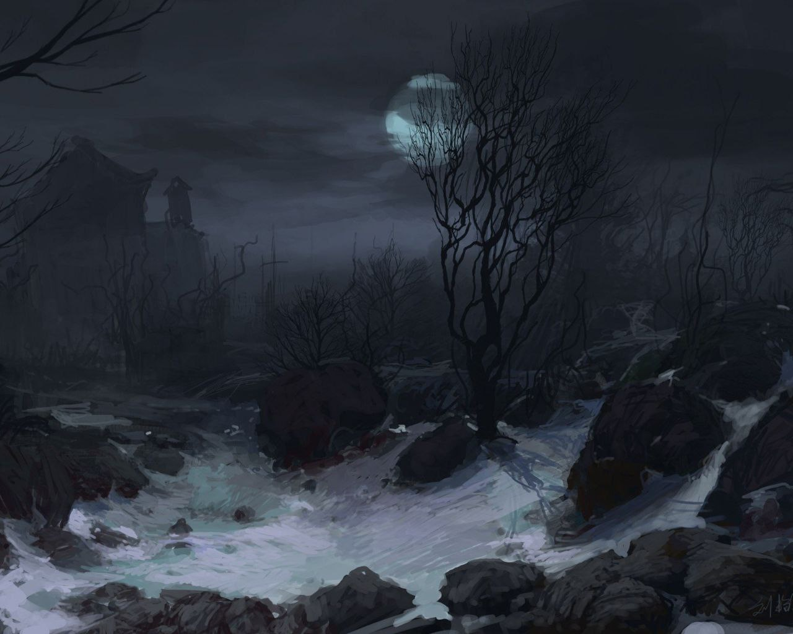
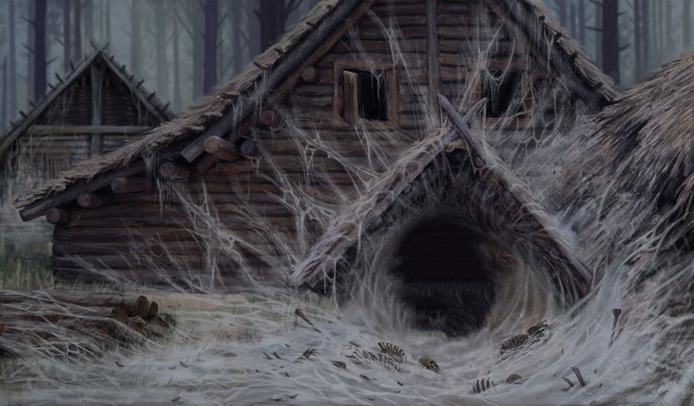
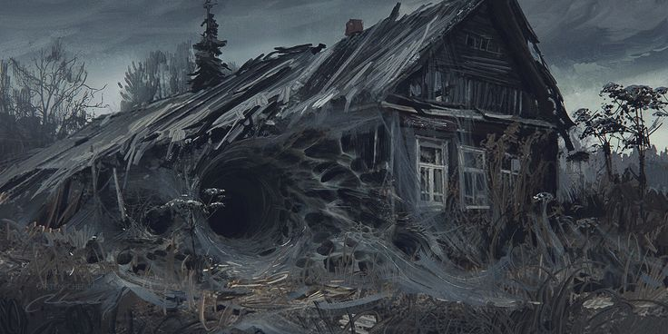

Никто давно туда не ходит, местные жители окрестных деревень считают, что это гиблое место и там живёт нечисть. В этих местах и ближайших лесах пропадают люди, будь то купцы, или грибники, или даже дети, случайно потерявшиеся в темных буреломах и вековых елях.
Заброшенная деревня Белая

Добро пожаловать в заброшенную деревню Белую!
Деревня Белая была Заброшена пол века назад, причины давно уже никто не помнит, однако с тех времен вся Земля и домики были покрыты белой субстанцией, напоминающей издалека снег как будто бы он там так и не растаял после Ночи Раскола, от чего деревню и прозвали "Белая".
Опастности

Риски

Дичь здесь давно не водится, охотники обходят это место стороной, зато в этих сырых местах водится море самых разных грибов и редких трав. От чего знахари и любители зимних заготовок частенько рискуют пропасть как и те, что были там до них.
Общий вид

Сама деревенька небольшая, ещё меньше чем соседняя "Окольное", тут находится около семи домишек и деревенское кладбище. Которое раньше было общим с соседней деревней, однако в за последние пол века людей тут хоронить перестали.
Как говорят...
Если окажешься в этом месте, велик шанс того, что уже не вернёшься.